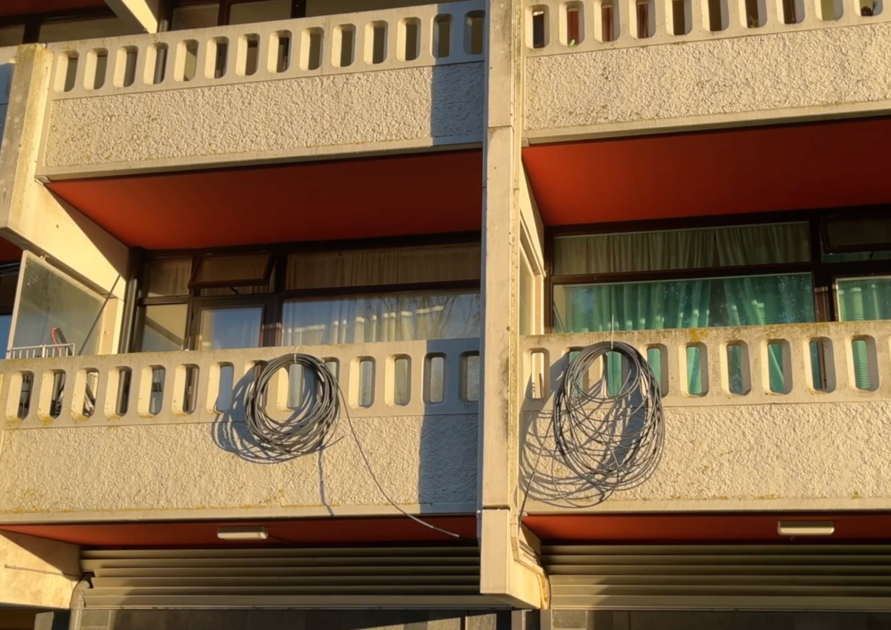
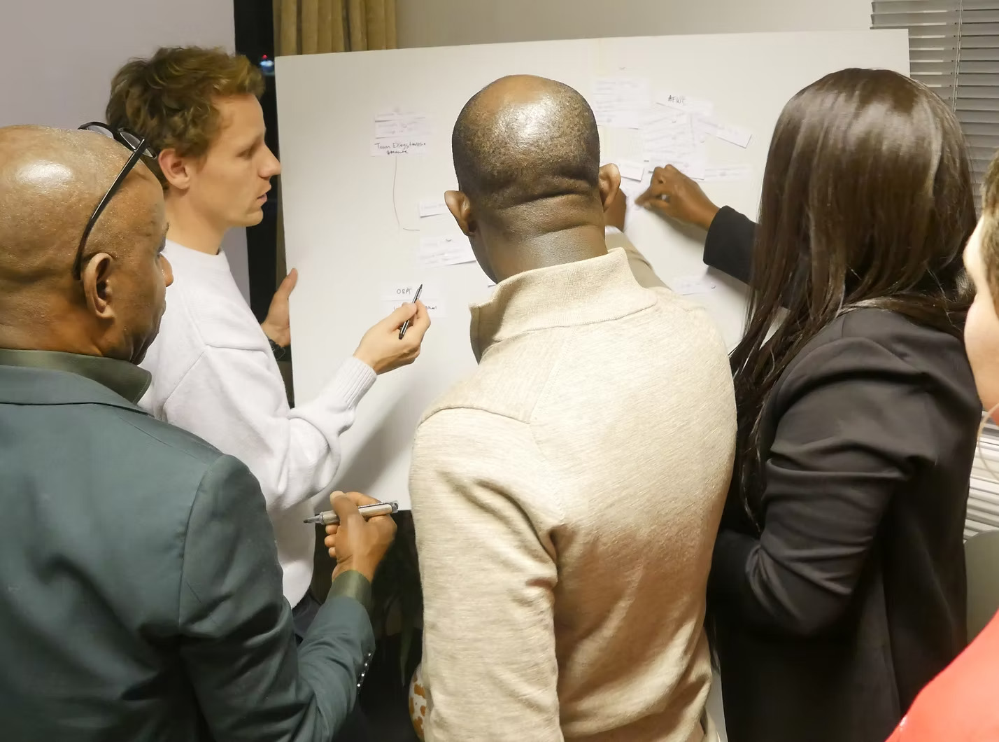
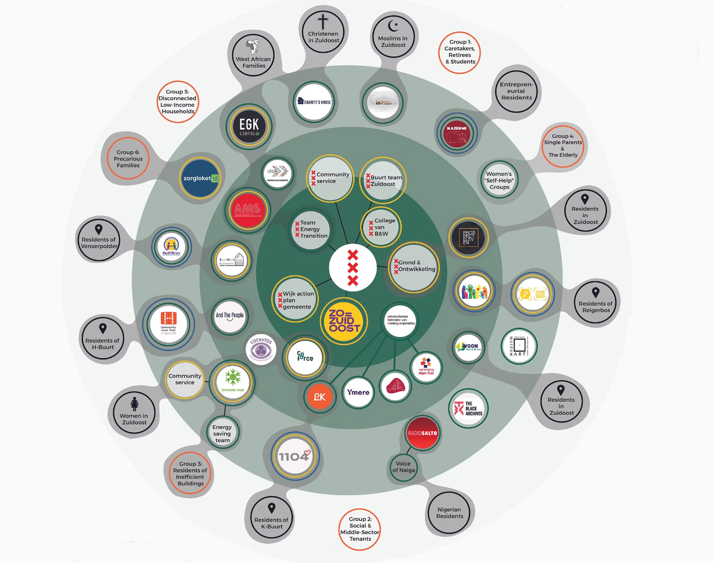

Just Energy Transition — Bridging Communities and Institutions
As part of the MSc MADE programme, I worked in a team of five on a living lab project with Energie Lab Zuidoost, exploring how to support a more inclusive and just energy transition in Amsterdam Zuidoost.
Through field research and interviews with residents and local organisations, we investigated barriers to participation. Our research highlighted the importance of trust and the role of community bridge builders in connecting residents with institutions and available support.

Building on our field research, we identified bridge builders: people and organisations already trusted within the community. We invited them to three co-creation sessions to explore the challenges they encounter and the support needed for more meaningful collaboration.
These conversations revealed tensions around institutional accountability, access to subsidies and fragmented relationships between local initiatives.
The co-creation sessions brought together bridge builders and institutional stakeholders to openly discuss challenges and explore opportunities for collaboration.
Participants emphasised the importance of ongoing dialogue and neutral spaces where difficult conversations could take place without being directed by the municipality. The sessions helped make existing tensions visible and created a starting point for more open collaboration.

A major part of my contribution was translating our research and co-creation process into visual material. The stakeholder map brings together community organisations, bridge builders and institutional actors, making the complexity of the local network visible.
Alongside field research and interviews, I took a leading role in visualising our findings through the stakeholder map, explanatory video and project website. These materials helped communicate our recommendations to Energie Lab Zuidoost and the municipality.